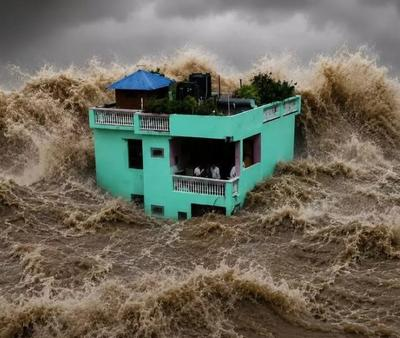

Después de las repentinas y devastadoras inundaciones registradas en Nepal el miércoles 26 de agosto de 2026, comenzaron a circular fotografías de esta ya famosa casa verde, acompañadas de múltiples comentarios religiosos del tipo: «¡Dios la protegió y salvó a sus ocupantes!». Porque cuando una inundación arrasa comunidades enteras, pero deja en pie una construcción, los creyentes ven siempre una intervención divina.


Sin embargo, hay un problema con esa interpretación: la inundación no escogió sólo a los creyentes en determinada divinidad para salvarlos, ni existe ninguna prueba de que un dios o diosa haya seleccionado específicamente esta casa para protegerla. La realidad humana es mucho más dura.
La República Democrática Federal de Nepal es un país de Asia del Sur ubicado en el Himalaya, limitado al norte por la República Popular China y al sur por la India, y según estimaciones de las Naciones Unidas, su población ronda los 30 millones de habitantes. La catástrofe comenzó en la zona fronteriza con el Tíbet (región autónoma de China), provocada por el colapso de un glaciar que lanzó una enorme masa de hielo y roca al río Lhende Khola, desencadenando una devastadora avenida de agua, lodo y escombros[1]. Los primeros balances hablaban de unas 160 víctimas, pero la cifra aumenta rápidamente. Para el 27-28 de agosto ya se hablaba de más de 350 fallecidos y más de 1.000 desaparecidos, y los balances posteriores han aumentado dramáticamente[2].
Por lo que, mientras alguien contempla esta desgracia y agradece a «Dios», la pregunta debería ser: ¿Y los cientos de casas que no salvó? ¿Y los que quedaron sepultados bajo toneladas de lodo? ¿Y los desaparecidos?… Y si la respuesta es que «Dios actúa de forma misteriosa», sepan que esa explicación puede acomodarse a cualquier resultado.
Si le muestras la famosa casa verde a un ingeniero civil, su primera reacción no será decir: «¡Aleluya, gloria a Dios!» Será tratar de observar la cimentación, el terreno y el comportamiento del agua, ya que hay varias explicaciones perfectamente naturales para que no se haya caído. En primer lugar, parece tener una estructura de hormigón armado relativamente pesada. Y su masa, sus columnas, vigas y losas, pueden haber proporcionado una resistencia considerable frente a las fuerzas horizontales del agua. Además, es posible que sus cimientos estén enterrados más profundamente de lo común. O incluso la casa puede estar cimentada sobre una roca, lo cual sería una hipótesis a investigar desde el punto de vista geotécnico, ya que hay varios indicios compatibles con esa posibilidad.
Durante una inundación torrencial, uno de los mayores peligros no es simplemente que el agua golpee una pared: es que erosione el terreno que sostiene la cimentación. Hay que ver si el suelo debajo de la casa permaneció suficientemente estable, si la estructura pudo conservar su apoyo mientras el agua circulaba alrededor. Y por supuesto, también importa muchísimo la velocidad del agua, que en este caso parece haber sido considerable, pero no tanto como para vencer la resistencia de la estructura.
Pero no podemos negar otro factor mucho menos sobrenatural pero muy importante: la suerte; pero vista no como un acto mágico o divino, sino como un tema de probabilidades. Una roca gigantesca golpeando una columna pudo destruir la vivienda, pero si la roca pasó a dos metros, pudo determinar que la casa permaneciera en pie. Pero eso no tiene nada que ver con «la mano de Dios», ni requiere de ninguna intervención sobrenatural. Requiere hidrodinámica, mecánica de suelos, resistencia de materiales y una considerable dosis de azar.
Por cierto, resulta muy curioso el razonamiento de los creyentes: cuando un edificio sobrevive se convierte automáticamente en «milagro»; pero cuando diez edificios contiguos son destruidos, nadie dice: «Aquí tenemos diez milagros de destrucción divina». Igual cuando cientos de personas mueren, pero se salva una familia.
Desde la ingeniería, en cambio, podemos estudiar por qué una estructura resistió y otra no. Y eso tiene una ventaja muy importante: las explicaciones pueden ponerse a prueba. Podemos analizar la cimentación, estudiar el tipo de suelo, reconstruir la trayectoria del flujo, calcular velocidades, estudiar la erosión. Podemos examinar las cargas que soportaron columnas y vigas, y podemos determinar qué modificaciones permitirían construir viviendas más resistentes para la próxima inundación.
Pero hay una ironía todavía mayor: la gente que menciona tanto a «Dios», suele estar refiriéndose al dios cristiano, o en general a la deidad monoteísta abrahámica, y Nepal no es precisamente un país que crea en esas religiones del Medio Oriente. Según el censo nacional de 2021, el 81,2 % de la población nepalesa se identificaba como hindú, el 8,2 % como budista, y apenas el 1,76 % como cristiana[3]. Y en las regiones himalayas afectadas existe además una importante presencia de otras religiones asiáticas. Así que resulta particularmente curioso que, desde otras partes del mundo, los cristianos observen las fotografías de esta casa y concluyan inmediatamente que «¡Dios la protegió!»… ¿Cuál «Dios» exactamente? Si fuera el «Dios» cristiano, tendríamos que pensar que esa familia era parte del pequeñísimo porcentaje de cristianos de la zona, y que tal dios intervino selectivamente sin importarle el bienestar de quienes no creen en él.
Pero hay otro detalle: que la casa permanezca de pie no significa que esté estructuralmente sana. La inundación pudo haber erosionado el suelo alrededor de sus cimientos, o podría existir socavamiento debajo de las zapatas. Podrían haberse producido daños en elementos estructurales que no son visibles desde las fotografías. O incluso podría haber quedado reducida la capacidad soportante del terreno. O sea, todavía podría terminar matando a quienes permanezcan allí. Una inspección profesional tendría que comprobar cimentaciones, columnas, vigas, losas, muros, asentamientos y estabilidad del terreno, antes de considerar habitable la construcción.
En fin, una catástrofe como ésta debería servir para estudiar cómo fallaron las estructuras, cómo se comportó el flujo, dónde se produjo la mayor erosión y qué sistemas de alerta podrían haber salvado vidas. No para aprovechar la desgracia para promocionar al «Dios» de determinada religión.
En otras palabras, si la casa sobrevivió fue gracias a una combinación de buena construcción, condiciones geológicas favorables, comportamiento hidráulico, resistencia estructural y azar. No «Gracias a Dios». Y deberíamos estudiar esos factores para intentar salvar otras casas. Porque cuando la próxima inundación llegue, será mucho más práctico confiar en una buena cimentación, mapas de riesgo y sistemas de alerta temprana, que esperar a que «Dios» intervenga nuevamente de forma selectiva.
Comentarios
Comments powered by Disqus